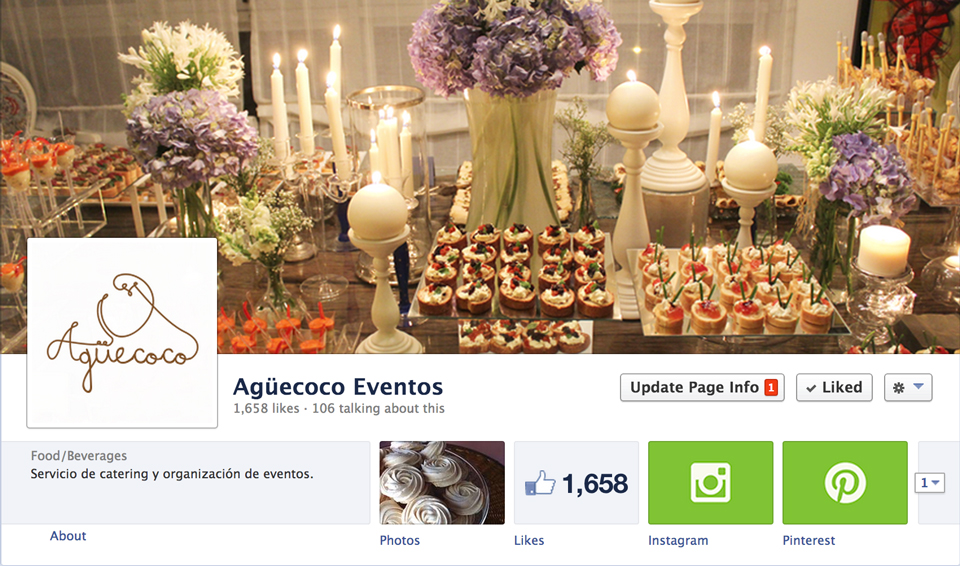

Project Overview
For my final project, I have decided to do a website for my mom's business. It's a catering business called Agüecoco, which is a very dominican way of saying "coconut water." They have a very clean and simple branding image, so it will be very interesting to design and develop their webpage. The main pages I plan to do are: home, "about us", services, photos, recipes and "contact us".
More About the Company
Agüecoco is a company created in order to meet all the needs in the gastronomic and logistic areas of cultural and social events.
In Agüecoco we sustain the conception of Gastronomy of seeing the feeding of human framed within their environment and as a result of a shared history. Cooking for us goes beyond a simple job, it's a work of art, passion and science.
Find Agüecoco on Facebook for more information about the company and brand.